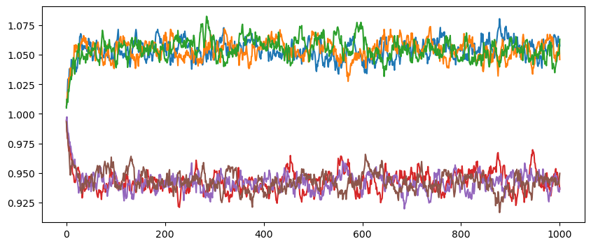
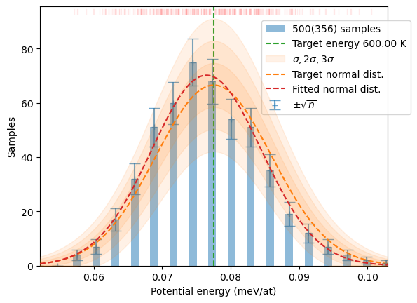

from ase.build import bulk
from ase.spacegroup import crystal
from hecss.monitor import plot_stats, plot_virial_stat, plot_xs_stat
from hecss.monitor import plot_acceptance_history, plot_dofmu_stat
from hecss.util import select_asap_model, create_asap_calculatorMH (Metropolis-Hastings)
This is an old (pre 0.6) implementation of the HECSS sampler using Metropolis-Hastings algorithm. This is depreciated and should not be used. The core functionality of the HECSS module is provided by the
HECSS class which encapsulates the HECSS_Sampler factory function, which returns sampler as an iterator. The other functions in this module: normalize_conf and write_dfset are just utilities which are useful in typical use cases.
HECSS_Sampler generator function
The implementation of the core functionality is centered around this generator function which yields samples from the thermal distribution at a given temperature. This is more flexible but also more advanced technique. For every-day use it is better to employ HECSS class which facilitates more traditional interface and usage patterns using this function under the hood.
Usage
A general usage scheme is to run the sampler in the for loop as an iterator providing series of samples.
N: number of requested samples,cryst: structure to be calculated,calc: ASE calculatorT: target temperature in Kelvin.
Loop variables:
n: sample numberi: sample configuration index (may not change between samples)x: displacement vectorf: forcese: potential energy
The minimal main loop should be structured like this:
sampler = HECSS_Sampler(cryst, calc, T)
for n, i, x, f, e in sampler:
process_sample(n, i, x, f, e)
if n > N :
break
sampler.close()This structure is well suited for the interactive use inside the notebook. It is possible in this setup to run few initial iterations to test if all works well and then continue the same loop by just increasing the N variable and re-running the above loop to continue the calculations.
Alternatively, if you know that you need particular number of iterations you can use the N parameter of the sampler to produce a particular number of configurations:
confs = [sample for sample in HECSS_Sampler(cryst, calc, T, N=N)]
process_samples(confs)This setup is better suited to command-line work, but in this case you cannot continue the iterations after the loop finishes.
These are minimal examples. Look at VASP_Tutorial and LAMMPS_Tutorial for more elaborated examples.
HECSS class
Standard interface to the HECSS library. This class encapsulates the actual sampler implemented in the HECSS_Sampler generator funtion and provides main functionality of the library through the generate method.
Usage
After creating HECSS object for the structure, calculator and temperature you call the generate method to obtain a list of samples of a given length.
Cubic Silica Carbide (3C-SiC)
# Local copy of model from OpenKIM-models from 2019
# model = 'data/Tersoff_LAMMPS_ErhartAlbe_2005_SiC__MO_903987585848_003'
# Model form 2019 OpenKIM-models package
# model = 'Tersoff_LAMMPS_ErhartAlbe_2005_SiC__MO_903987585848_003'
# Model form 2021 OpenKIM-models package
# model = 'Tersoff_LAMMPS_ErhartAlbe_2005_SiC__MO_903987585848_004'
# model = 'Tersoff_LAMMPS_ErhartAlbe_2005SiII_SiC__MO_408791041969_003'
# model = 'MEAM_LAMMPS_KangEunJun_2014_SiC__MO_477506997611_000'
model = select_asap_model('SiC')
print(f'Using potential model: {model}')
sys_size = '1x1x1'
sys_size = '2x2x2'
sys_size = '3x3x3'
sys_size = '4x4x4'
sys_size = '5x5x5'
sc = [int(v) for v in sys_size.split('x')]
cryst = bulk('SiC', crystalstructure='zincblende',
a=4.38120844, cubic=True).repeat(tuple(sc))
cryst.calc = create_asap_calculator(model)Using potential model: MEAM_LAMMPS_KangEunJun_2014_SiC__MO_477506997611_000T = 600
xsl = []
dofmu = []
xi=1
chi=0.66
chi=1
sampler = HECSS_MH(cryst, create_asap_calculator(model),
T, delta_sample=0.01, width=1,
dofmu_list=dofmu, xscale_list=xsl, xi=xi, chi=chi, pbar=True)N = 1_000
samples = sampler.generate(N)
plot_stats(samples, T, sqrN=True)/home/jochym/.conda/envs/dev/lib/python3.11/site-packages/spglib/spglib.py:115: DeprecationWarning: dict interface (SpglibDataset['mapping_to_primitive']) is deprecated.Use attribute interface ({self.__class__.__name__}.{key}) instead
warnings.warn(plt.figure(figsize=(10,4))
for n, el in enumerate(set(cryst.get_chemical_symbols())):
elmap = np.array(cryst.get_chemical_symbols()) == el
plt.plot(np.array(xsl)[:,elmap,:].mean(-2), label=el)
# plt.legend()
Olivine in the cubic spinel structure (gamma phase)
omodel = select_asap_model('Universal')
print(f'Using potential model: {omodel}')
oliv = ase.io.read('data/spinel.POSCAR')
oliv.calc = create_asap_calculator(omodel)
print(f'Space group: {spglib.get_spacegroup(get_cell_data(oliv))}')Using potential model: LJ_ElliottAkerson_2015_Universal__MO_959249795837_003
Space group: Fd-3m (227)print(f'Max. stress: {np.abs(oliv.get_stress()[:3]).max()/un.GPa:.3f} GPa')
print(f'Max. force : {np.abs(oliv.get_forces()).max():.3f} eV/A')Max. stress: 0.881 GPa
Max. force : 0.002 eV/AT = 600
dofmu = []
xsl = []
xi = 1
chi = 1
osampler = HECSS_MH(oliv, create_asap_calculator(omodel),
T, delta_sample=0.01, width=0.7,
xi=xi, chi=chi,
dofmu_list=dofmu, xscale_list=xsl)
N = 5_00
osamples = osampler.generate(N)
plot_stats(osamples, T, sqrN=True)